Anatomy & Physiology Systems · 方妙君
大系統複習 複習
依方妙君老師《解剖生理大系統複習》投影片整理：心臟與漿膜、頸椎與自律神經、泌尿、消化、內分泌（血糖、血鈣）、呼吸，以及最後三頁的 30 題綜合題。每頁附投影片原頁，題目附答案與解析；投影片上的錯誤用 ⚠ 標出。
怎麼用
- 左側目錄依講義分章，一次看一頁。每章最後一頁是自我測驗（字卡＋選擇題）。
- 紅框 必背重點：考前最後一天看這些就好。黃框 易混淆：常考的對比。紫框 記憶口訣。
- 按「遮英文」會把術語的英文模糊掉，自己先想英文，再點一下看答案。
- 講義圖片點一下可以放大。
心臟與漿膜（腹膜）
重點
房室瓣（三尖瓣在右、二尖瓣在左）位於心房與心室之間，關閉時產生第一心音。乳頭肌從心室壁長出，頂端的腱索拉住房室瓣邊緣：乳頭肌收縮 → 腱索拉緊 → 瓣膜不會翻進心房。
腹膜：貼在腹壁的叫壁層腹膜，包在臟器表面的叫臟層腹膜，兩層之間的潛在空隙是腹膜腔。男性腹膜腔是封閉的；女性經輸卵管開口與外界相通。
| 分類 | 被腹膜包覆的程度 | 器官（投影片 p.3） |
|---|---|---|
| 腹膜內器官 | 幾乎整個被包，活動度大 | 胃、十二指腸上部、空腸、回腸、盲腸、闌尾、橫結腸、乙狀結腸、脾、卵巢、輸卵管 |
| 腹膜間器官 | 大部分被包 | 肝、膽、升結腸、降結腸、直腸上部、膀胱、子宮 |
| 腹膜後器官 | 只有前面一面被包 | 十二指腸降部與水平部、腎上腺、腎、胰、輸尿管、直腸下部 |
記法：腹膜後器官「腎、腎上腺、胰、輸尿管、十二指腸（大部分）」都貼在後腹壁上。
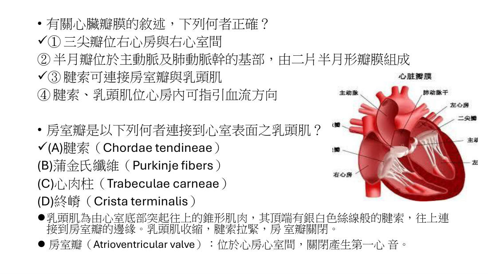
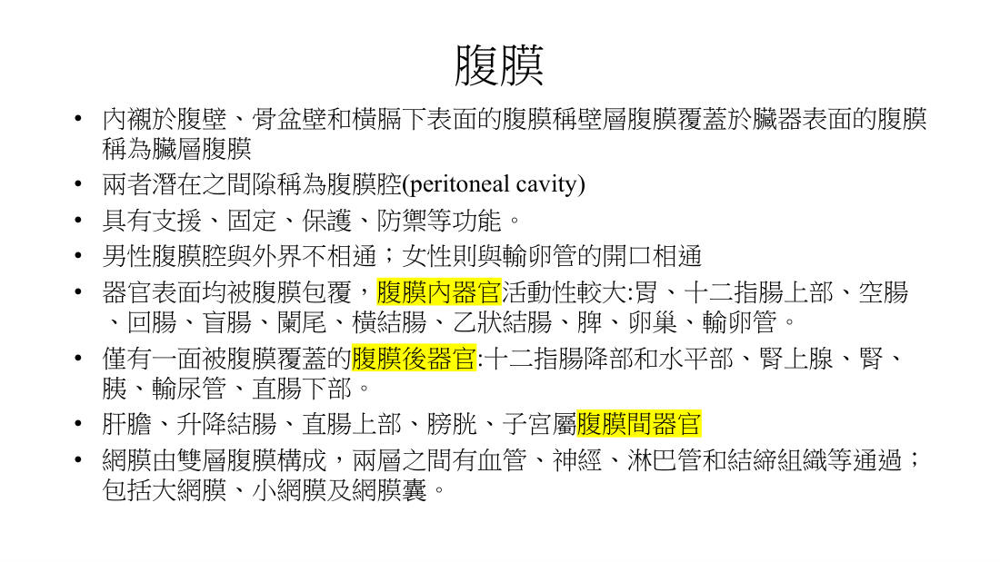
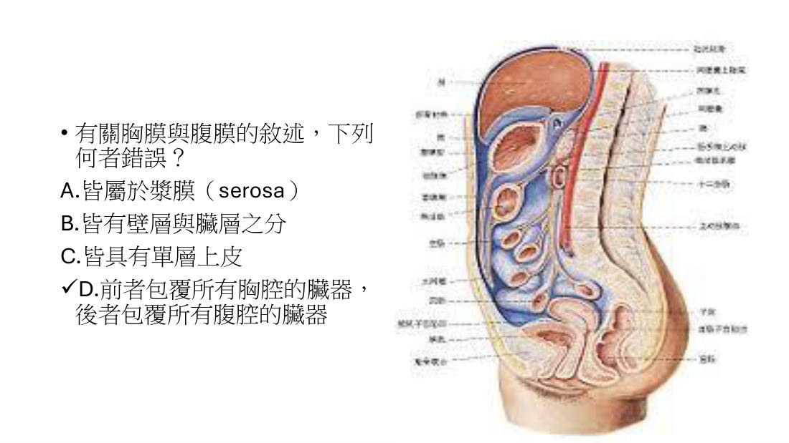
題目
題 1 有關心臟瓣膜的敘述，下列何者正確？
- 三尖瓣位右心房與右心室間
- 半月瓣位於主動脈及肺動脈幹的基部，由二片半月形瓣膜組成
- 腱索可連接房室瓣與乳頭肌
- 腱索、乳頭肌位心房內可指引血流方向
看答案與解析
答案：(A) 三尖瓣位右心房與右心室間、(C) 腱索可連接房室瓣與乳頭肌
② 半月瓣（主動脈瓣、肺動脈瓣）各由三片半月形瓣膜組成，不是二片；④ 腱索和乳頭肌在心室內，作用是防止房室瓣翻轉，不是指引血流。
出處：投影片 p.2
題 2 房室瓣是以下列何者連接到心室表面之乳頭肌？
- 腱索（Chordae tendineae）
- 蒲金氏纖維（Purkinje fibers）
- 心肉柱（Trabeculae carneae）
- 終嵴（Crista terminalis）
看答案與解析
答案：(A) 腱索（Chordae tendineae）
腱索像降落傘的繩子，一端接房室瓣邊緣，另一端接乳頭肌。蒲金氏纖維是傳導系統；心肉柱是心室壁上的肌肉嵴；終嵴在右心房。
出處：投影片 p.2
題 3 有關胸膜與腹膜的敘述，下列何者錯誤？
- 皆屬於漿膜（serosa）
- 皆有壁層與臟層之分
- 皆具有單層上皮
- 前者包覆所有胸腔的臟器，後者包覆所有腹腔的臟器
看答案與解析
答案：(D) 前者包覆所有胸腔的臟器，後者包覆所有腹腔的臟器
兩者都是漿膜，都分壁層與臟層，表面都是單層扁平上皮（間皮）。但胸膜只包肺，心臟包在心包裡；腹膜也沒有包住所有腹腔臟器，腎、胰、輸尿管都是腹膜後器官。
出處：投影片 p.3–4
頸椎與自律神經、突觸
頸椎（投影片 p.5）
共 7 塊：C1 寰椎、C2 樞椎、C7 隆椎。頸椎的三個特徵：橫突孔（每一塊都有，椎動脈從這裡通過）、椎孔大而呈三角形、棘突短而分叉（雙歧）。C1–C2 之間沒有椎間盤。
自律神經（投影片 p.6、8、9）
控制中樞在下視丘。交感神經從脊髓的胸、腰段出來；副交感神經從腦幹和薦髓 S2–S4 出來。大部分血管、汗腺、豎毛肌、腎上腺髓質只有交感神經支配。
自律神經由兩個神經元接力：節前神經元細胞體在腦或脊髓，有髓鞘、傳得快；節後神經元細胞體在神經節，無髓鞘、傳得慢。
| 器官 | 交感（戰或逃） | 副交感（休息消化） |
|---|---|---|
| 瞳孔 | 散瞳 | 縮瞳 |
| 心臟 | 心跳↑、收縮力↑ | 心跳↓ |
| 支氣管平滑肌 | 舒張 | 收縮 |
| 腸胃 | 蠕動、分泌↓ | 蠕動、分泌↑ |
| 膀胱 | 逼尿肌舒張（憋尿） | 逼尿肌收縮（排尿） |
突觸（投影片 p.7）
化學突觸靠神經傳遞物質傳訊息：動作電位到達末梢 → 電壓控制的鈣離子通道打開 → Ca²⁺ 流入 → 小泡釋出神經傳遞物質。電性突觸（常見於心肌、平滑肌）以連接素形成的通道直接讓離子流過。
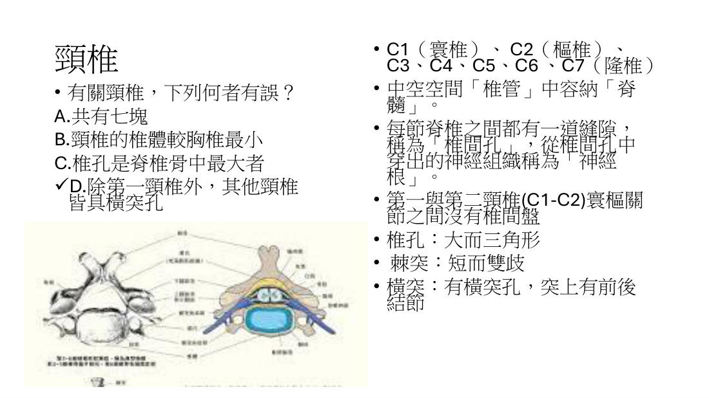
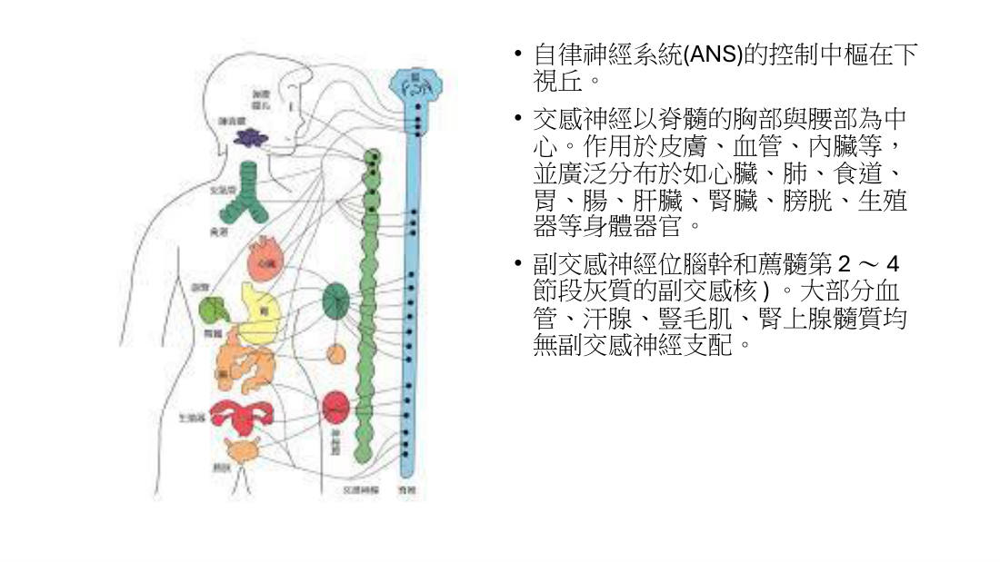
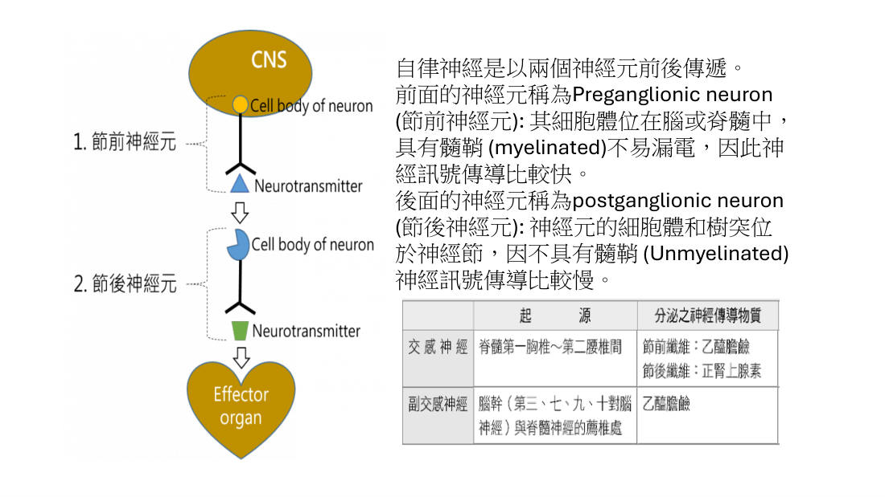
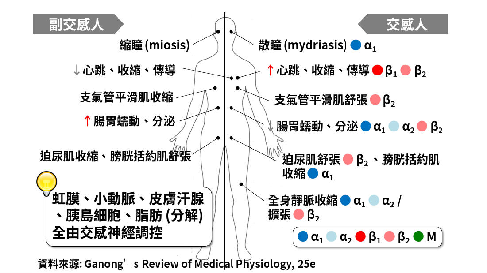
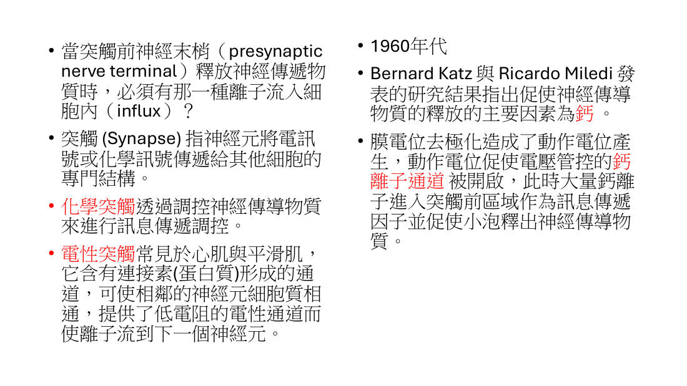
題目
題 4 有關頸椎，下列何者有誤？
- 共有七塊
- 頸椎的椎體較胸椎最小
- 椎孔是脊椎骨中最大者
- 除第一頸椎外，其他頸椎皆具橫突孔
看答案與解析
答案：(D) 除第一頸椎外，其他頸椎皆具橫突孔
所有頸椎都有橫突孔，第一頸椎也不例外，所以 (D) 錯。頸椎椎體最小、椎孔最大，都正確。
出處：投影片 p.5
題 5 當突觸前神經末梢（presynaptic nerve terminal）釋放神經傳遞物質時，必須有那一種離子流入細胞內（influx）？（投影片沒有列選項，此處補上）
- 鈉離子（Na⁺）
- 鉀離子（K⁺）
- 鈣離子（Ca²⁺）
- 氯離子（Cl⁻）
看答案與解析
答案：(C) 鈣離子（Ca²⁺）
投影片 p.7：動作電位使電壓控制的鈣離子通道打開，大量 Ca²⁺ 進入突觸前區域，促使小泡釋出神經傳遞物質。
出處：投影片 p.7
泌尿系統
腎臟的功能（投影片 p.10）
清除廢物；調節水分、電解質、酸鹼平衡；分泌紅血球生成素和腎素；活化維生素 D，調節鈣磷平衡。
腎絲球過濾率 GFR（投影片 p.12–13）
交感神經使入球小動脈收縮 → 進來的血少 → 過濾力下降。血管收縮素 II 使出球小動脈收縮 → 出口變窄、壓力堆積 → 過濾力上升。GFR 越小代表腎功能越差；肌酸酐正常值男性 ≤1.3 mg/dL、女性 ≤1.0 mg/dL。
記法：入口縮（交感）→ GFR↓；出口縮（血管收縮素 II）→ GFR↑。
腎臟構造（投影片 p.11）
緻密斑是遠曲小管的特化上皮，偵測到血鈉降低時，會讓近腎絲球細胞分泌腎素。髓質由 8–18 個腎錐體組成，尖端是腎乳頭，伸入腎盞。
膀胱與尿道（投影片 p.21、33）
膀胱位於恥骨聯合後方，成人約可容納 500 mL。膀胱壁的平滑肌統稱逼尿肌。副交感神經（薦髓 S2–S4）使膀胱收縮排尿；交感神經來自 T10–L2。女性尿道約 3–4 cm，男性約 18–20 cm。
⚠ 投影片 p.33 寫「尺骨聯合（Symphysis pubis）」，應為恥骨聯合。骨盆膈投影片寫「提肛肌、骶骨肌、內閉孔肌、梨狀肌」；骨盆膈其實是提肛肌＋尾骨肌（coccygeus），內閉孔肌、梨狀肌構成的是骨盆側壁和後壁。
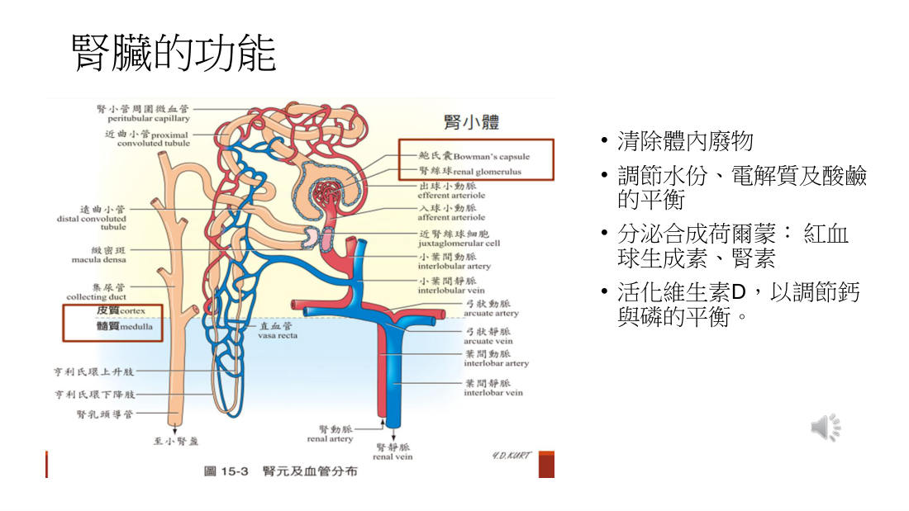
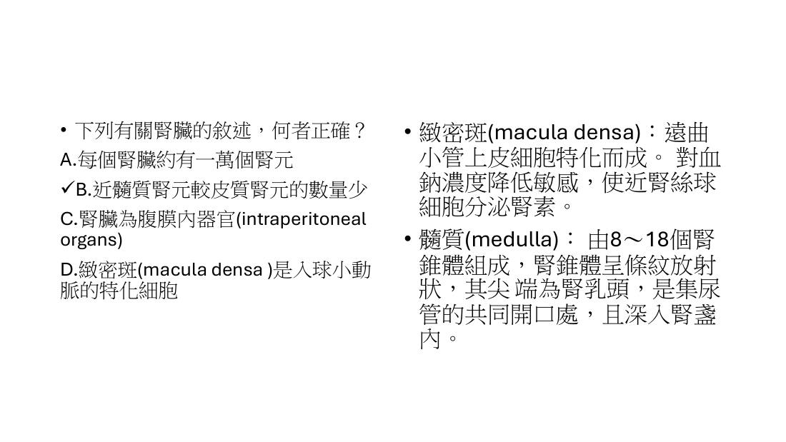
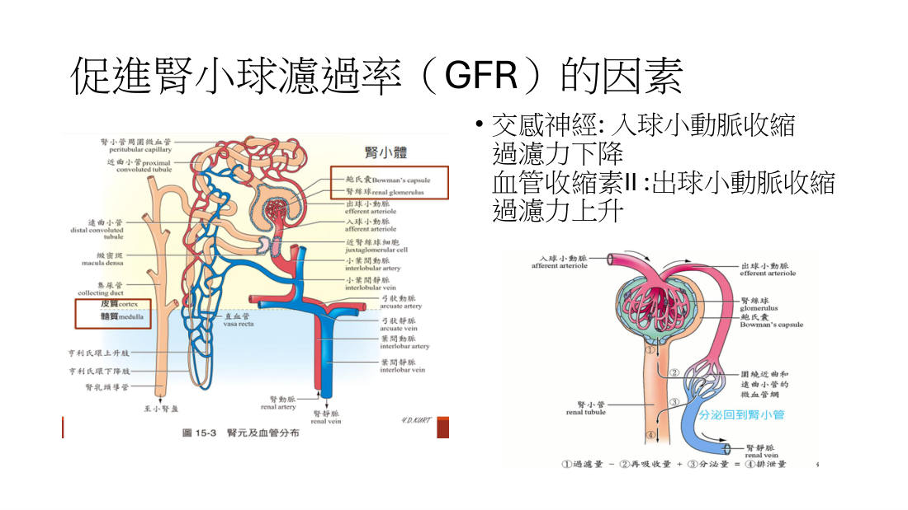
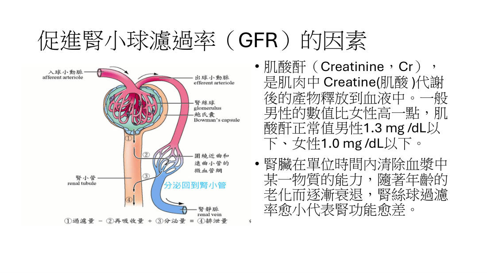
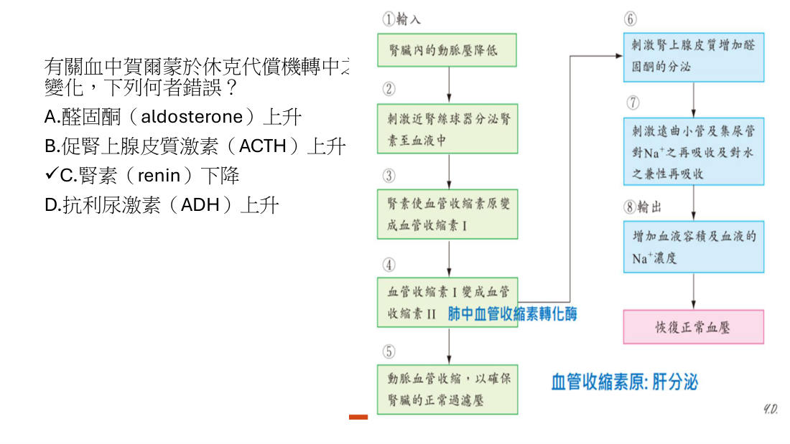
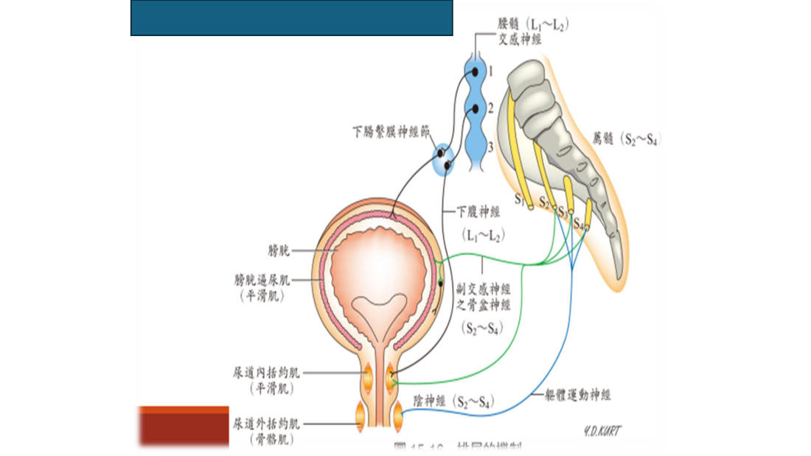
題目
題 6 下列有關腎臟的敘述，何者正確？
- 每個腎臟約有一萬個腎元
- 近髓質腎元較皮質腎元的數量少
- 腎臟為腹膜內器官（intraperitoneal organs）
- 緻密斑（macula densa）是入球小動脈的特化細胞
看答案與解析
答案：(B) 近髓質腎元較皮質腎元的數量少
(A) 每個腎約有一百萬個腎元；(B) 近髓質腎元約占 15%，比皮質腎元少 ✔；(C) 腎臟是腹膜後器官；(D) 緻密斑是遠曲小管的特化細胞，入球小動脈特化出來的是近腎絲球細胞。
出處：投影片 p.11、p.3
題 7 有關血中賀爾蒙於休克代償機轉中之變化，下列何者錯誤？
- 醛固酮（aldosterone）上升
- 促腎上腺皮質激素（ACTH）上升
- 腎素（renin）下降
- 抗利尿激素（ADH）上升
看答案與解析
答案：(C) 腎素（renin）下降
休克 → 血壓、腎血流下降 → 腎素上升 → 血管收縮素 II、醛固酮上升，ADH 與 ACTH 也上升，一起把血壓和血量拉回來。所以「腎素下降」是錯的。
出處：投影片 p.14
消化系統
食道與胃（投影片 p.16）
食道上段是橫紋肌，下 1/3 是平滑肌，中段兩種混合。胃液含：胃蛋白酶（消化蛋白質）、鹽酸（殺菌）、內在因子（幫助吸收維生素 B12，B12 是造紅血球的原料）。腸胃道是人體最大的免疫器官。
肝臟（投影片 p.17）
位於右上腹、橫膈下方，由右側第 6–11 肋保護。右葉比左葉大，兩葉以鐮狀韌帶分隔；下緣的肝圓韌帶是胎兒時期的臍靜脈。背面的 H 形裂隙把肝分成右葉、左葉、尾葉、方葉，中間一橫是肝門。肝由約 50 萬個六角形的肝小葉構成。HDL 把膽固醇送回肝臟代謝；膽紅素隨膽汁排入腸道，最後從糞便排出。
胰臟（投影片 p.18、26）
位於胃的後方、L1–L2 前方，屬腹膜後器官；分為頭、體、尾，頭部貼十二指腸，尾部靠近脾臟。同時是外分泌腺（胰液：澱粉酶、脂肪酶、胰蛋白酶、胰凝乳蛋白酶、核酸酶）和內分泌腺（胰島素、昇糖素）。
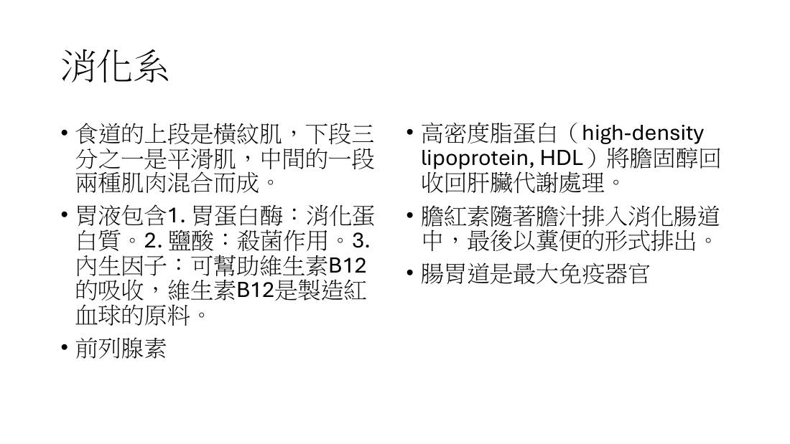
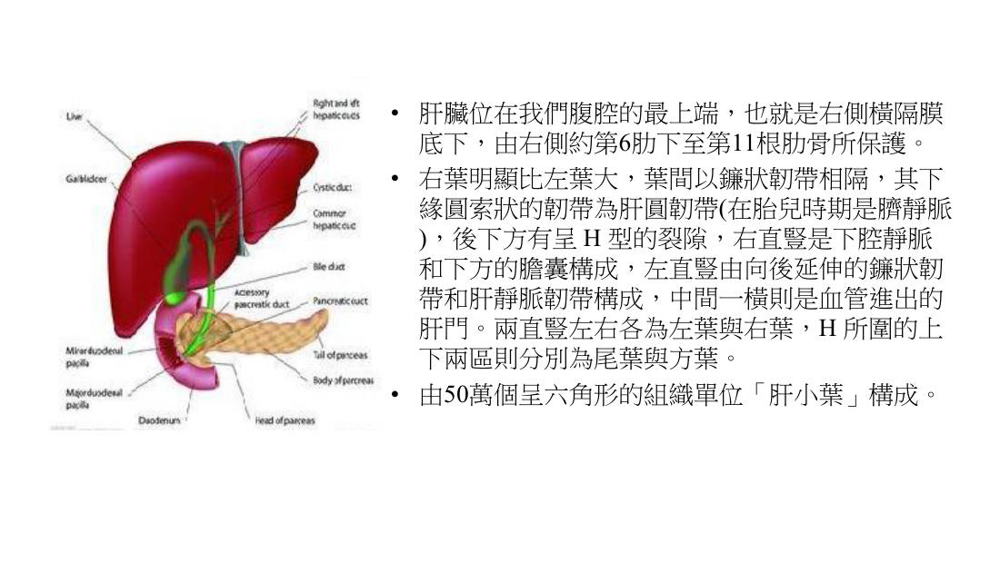
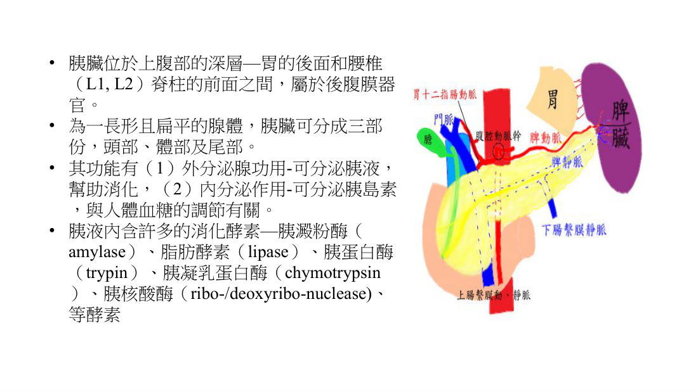
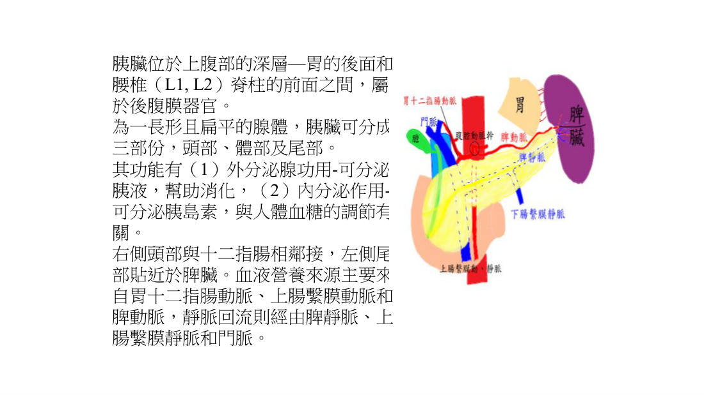
內分泌：血糖與血鈣
血糖調節（投影片 p.19）
胰島 β 細胞分泌胰島素 → 降血糖；α 細胞分泌昇糖素 → 升血糖。進食後血糖上升 → 胰島素增加，同時抑制昇糖素。需要葡萄糖時，肝臟靠肝醣分解或糖質新生補充。糖質新生是用非碳水化合物（乳酸、丙酮酸、甘油、生糖性胺基酸）做葡萄糖，主要在肝臟，少量在腎臟。
| 激素 | 來源 | 對血鈣 | 怎麼做到（投影片 p.22、28） |
|---|---|---|---|
| 副甲狀腺素 PTH | 副甲狀腺 | ↑ | 促進蝕骨（骨鈣釋出）、腎臟再吸收鈣、促進活性維生素 D 生成；增加尿磷排出 |
| 降鈣素 calcitonin | 甲狀腺濾泡旁細胞（C 細胞） | ↓ | 抑制蝕骨、增加腎臟排出鈣與磷酸鹽 |
| 活性維生素 D（1,25-(OH)₂D₃） | 腎臟活化 | ↑ | 增加腸道吸收鈣與磷酸鹽 |
鈣的分布與異常（投影片 p.22、27、30）
成人體內約 1 kg 鈣，99% 在骨骼，1% 在細胞外液與軟組織，負責神經傳導與肌肉收縮。正常血鈣 9.0–10.0 mg/dL。游離鈣低於 4.3 mg/dL 會出現痙攣、抽搐、手指與嘴唇周圍麻木、心律不整。PTH 過多 → 骨質疏鬆、尿路結石、血磷降低。慢性腎病（GFR < 30）→ 活性維生素 D 減少、血磷升高 → 低血鈣。
⚠ 投影片 p.29 寫「維生素 D3（骨化三醇；1,25-(OH)₂-D）」，把兩種東西寫在一起了：皮膚經紫外線照射產生的是維生素 D3（膽鈣化醇），它要先在肝臟、再在腎臟各加一個 –OH，才變成有活性的骨化三醇 1,25-(OH)₂D₃。
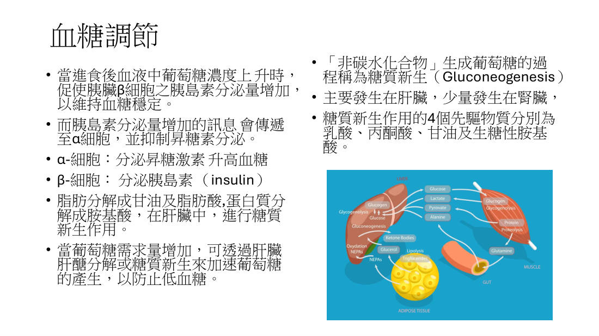
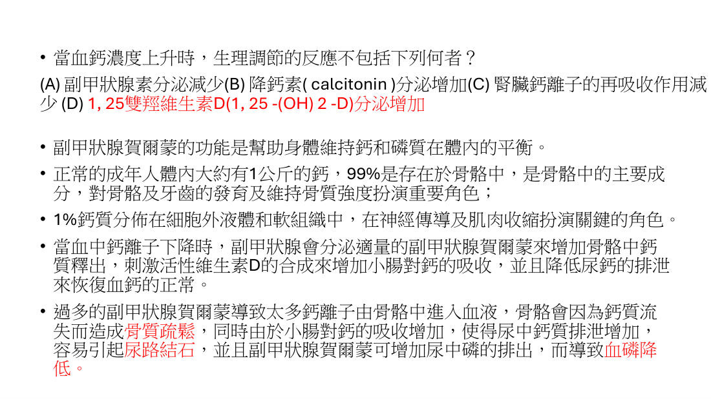
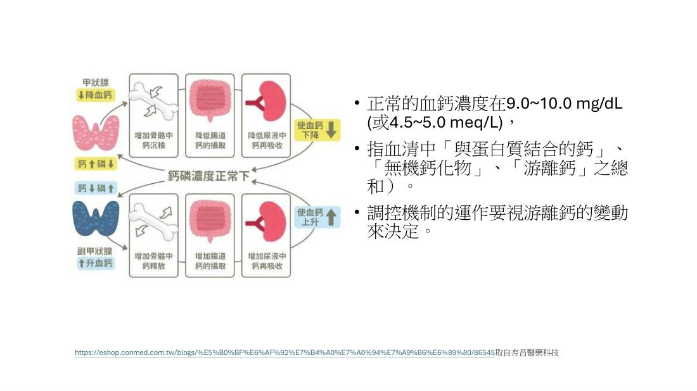
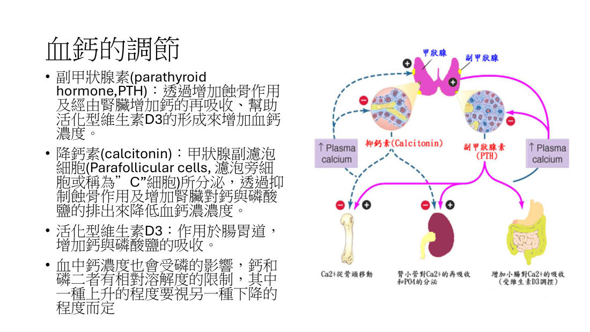
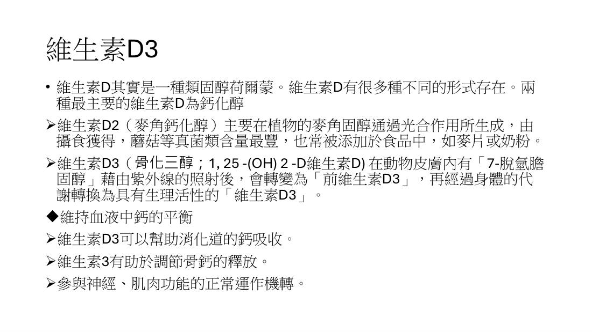
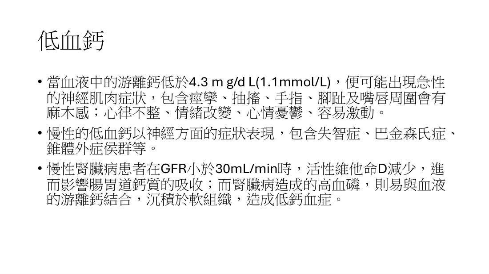
題目
題 8 當血鈣濃度上升時，生理調節的反應不包括下列何者？
- 副甲狀腺素分泌減少
- 降鈣素（calcitonin）分泌增加
- 腎臟鈣離子的再吸收作用減少
- 1,25 雙羥維生素 D（1,25-(OH)₂-D）分泌增加
看答案與解析
答案：(D) 1,25 雙羥維生素 D（1,25-(OH)₂-D）分泌增加
血鈣太高要往下調：PTH 減少、降鈣素增加、腎臟少回收鈣，都會讓血鈣下降。活性維生素 D 會增加腸道吸收鈣、讓血鈣上升，所以這時應該減少，(D) 不是正確的反應。
出處：投影片 p.22、28
呼吸系統
重點（投影片 p.23–24、33）
肺門是支氣管、肺動脈、肺靜脈、淋巴管和神經進出肺的地方，位在肺的內側面（靠心臟那側）。呼吸中樞位於腦幹的延髓和橋腦。
CO₂ 的運送：CO₂ + H₂O ⇌ H₂CO₃ ⇌ H⁺ + HCO₃⁻。組織產生的 CO₂ 大部分在紅血球裡變成 HCO₃⁻ 運到肺，在肺部再變回 CO₂ 呼出。
最主要的呼吸肌是橫膈膜（骨骼肌）。吸氣輔助肌：外肋間肌、胸大肌、斜方肌、胸鎖乳突肌。胸骨柄和胸骨體交接處是胸骨角，第 2 肋在這裡接胸骨。
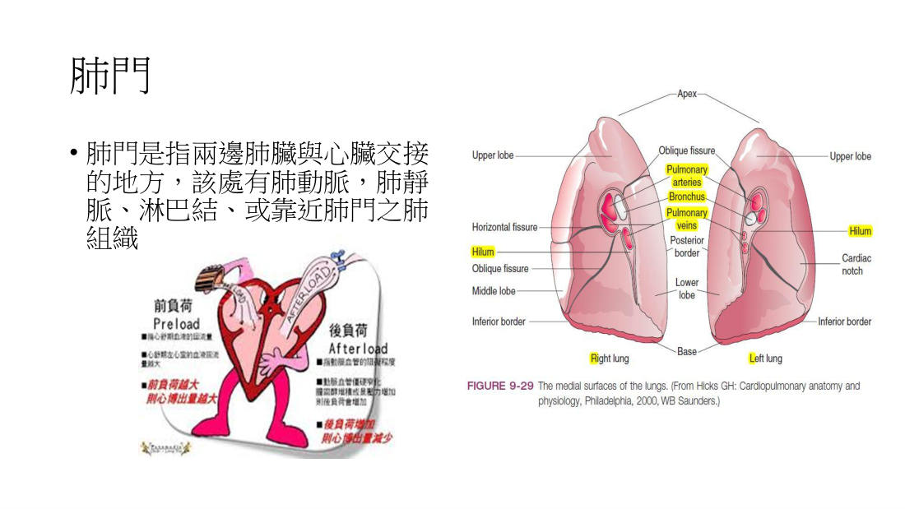
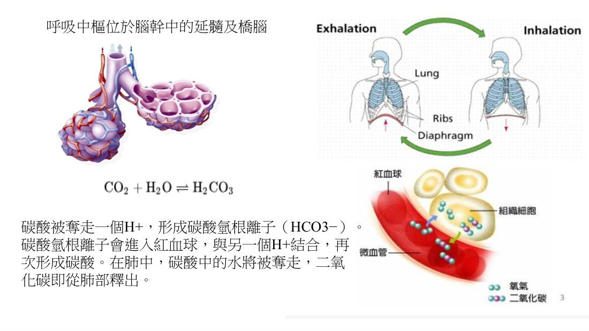
綜合題 30 題（p.31–33）
投影片最後三頁的基本題，每題前面的數字是答案。這裡改成選擇題，附一句解析。
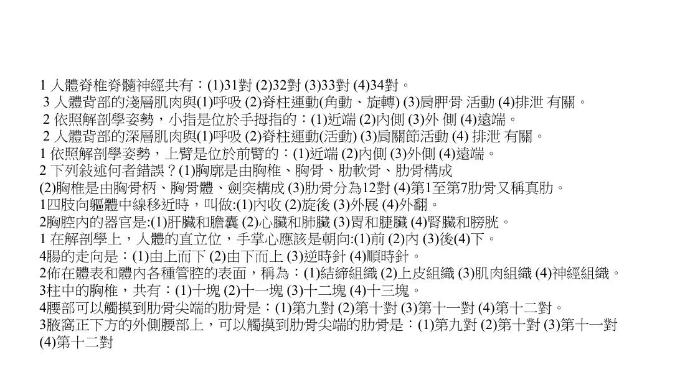
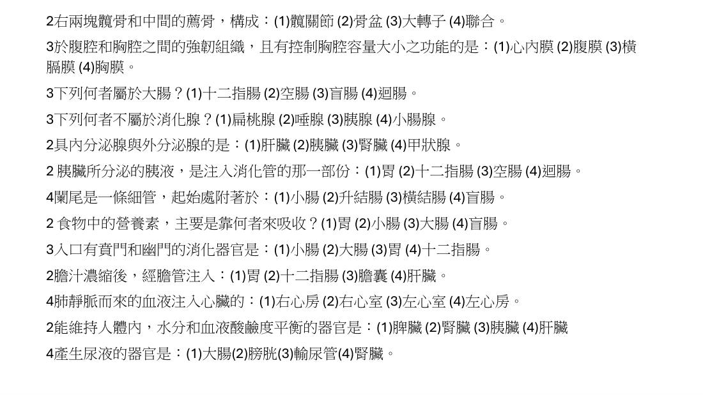
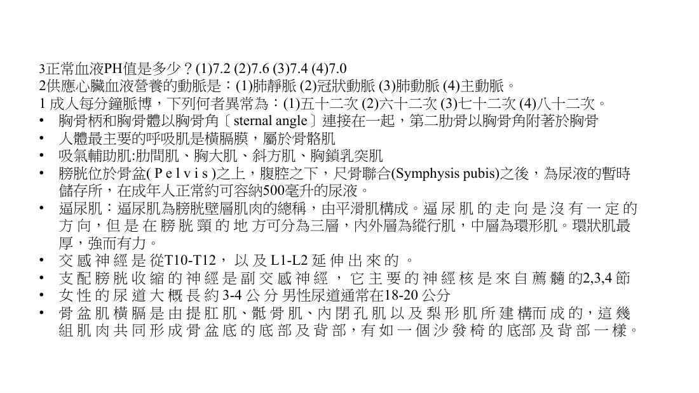
綜合 1 人體脊椎脊髓神經共有：
- 31對
- 32對
- 33對
- 34對
看答案與解析
答案：(A) 31對
頸 8＋胸 12＋腰 5＋薦 5＋尾 1＝31 對。
出處：投影片 p.31–33
綜合 2 人體背部的淺層肌肉與何者有關？
- 呼吸
- 脊柱運動（角動、旋轉）
- 肩胛骨活動
- 排泄
看答案與解析
答案：(C) 肩胛骨活動
背部淺層肌（斜方肌、闊背肌、菱形肌、提肩胛肌）都連到肩胛骨或肱骨，負責上肢與肩胛活動。
出處：投影片 p.31–33
綜合 3 依照解剖學姿勢，小指是位於手拇指的：
- 近端
- 內側
- 外側
- 遠端
看答案與解析
答案：(B) 內側
解剖學姿勢掌心朝前，拇指在外側、小指在內側。
出處：投影片 p.31–33
綜合 4 人體背部的深層肌肉與何者有關？
- 呼吸
- 脊柱運動（活動）
- 肩關節活動
- 排泄
看答案與解析
答案：(B) 脊柱運動（活動）
深層的豎脊肌群沿脊柱分布，負責脊柱伸直與旋轉。
出處：投影片 p.31–33
綜合 5 依照解剖學姿勢，上臂是位於前臂的：
- 近端
- 內側
- 外側
- 遠端
看答案與解析
答案：(A) 近端
四肢上離軀幹較近的叫近端。
出處：投影片 p.31–33
綜合 6 下列敍述何者錯誤？
- 胸廓是由胸椎、胸骨、肋軟骨、肋骨構成
- 胸椎是由胸骨柄、胸骨體、劍突構成
- 肋骨分為12對
- 第1至第7肋骨又稱真肋
看答案與解析
答案：(B) 胸椎是由胸骨柄、胸骨體、劍突構成
由胸骨柄、胸骨體、劍突構成的是胸骨，不是胸椎。
出處：投影片 p.31–33
綜合 7 四肢向軀體中線移近時，叫做：
- 內收
- 旋後
- 外展
- 外翻
看答案與解析
答案：(A) 內收
靠近中線＝內收；遠離中線＝外展。
出處：投影片 p.31–33
綜合 8 胸腔內的器官是：
- 肝臟和膽囊
- 心臟和肺臟
- 胃和胰臟
- 腎臟和膀胱
看答案與解析
答案：(B) 心臟和肺臟
橫膈以上是胸腔：心、肺。
出處：投影片 p.31–33
綜合 9 在解剖學上，人體的直立位，手掌心應該是朝向：
- 前
- 內
- 後
- 下
看答案與解析
答案：(A) 前
解剖學姿勢：直立、面向前、雙臂下垂、掌心朝前。
出處：投影片 p.31–33
綜合 10 （大）腸的走向是：
- 由上而下
- 由下而上
- 逆時針
- 順時針
看答案與解析
答案：(D) 順時針
從正面看：升結腸在右側往上、橫結腸由右往左、降結腸在左側往下，看起來是順時針；腹部按摩也順著這個方向。
出處：投影片 p.31–33
綜合 11 分佈在體表和體內各種管腔的表面，稱為：
- 結締組織
- 上皮組織
- 肌肉組織
- 神經組織
看答案與解析
答案：(B) 上皮組織
覆蓋體表、襯在管腔內面的是上皮組織。
出處：投影片 p.31–33
綜合 12 脊柱中的胸椎，共有：
- 十塊
- 十一塊
- 十二塊
- 十三塊
看答案與解析
答案：(C) 十二塊
頸 7、胸 12、腰 5。
出處：投影片 p.31–33
綜合 13 腰部可以觸摸到肋骨尖端的肋骨是：
- 第九對
- 第十對
- 第十一對
- 第十二對
看答案與解析
答案：(D) 第十二對
第 11、12 對是浮肋，尖端游離；在腰部摸到的是第 12 對。
出處：投影片 p.31–33
綜合 14 腋窩正下方的外側腰部上，可以觸摸到肋骨尖端的肋骨是：
- 第九對
- 第十對
- 第十一對
- 第十二對
看答案與解析
答案：(C) 第十一對
側腰（腋中線往下）摸到的浮肋尖端是第 11 對。
出處：投影片 p.31–33
綜合 15 左右兩塊髖骨和中間的薦骨，構成：
- 髖關節
- 骨盆
- 大轉子
- 聯合
看答案與解析
答案：(B) 骨盆
兩塊髖骨＋薦骨（＋尾骨）＝骨盆。
出處：投影片 p.31–33
綜合 16 位於腹腔和胸腔之間的強韌組織，且有控制胸腔容量大小之功能的是：
- 心內膜
- 腹膜
- 橫膈膜
- 胸膜
看答案與解析
答案：(C) 橫膈膜
橫膈收縮下降 → 胸腔變大 → 吸氣。
出處：投影片 p.31–33
綜合 17 下列何者屬於大腸？
- 十二指腸
- 空腸
- 盲腸
- 迴腸
看答案與解析
答案：(C) 盲腸
小腸＝十二指腸、空腸、迴腸；大腸＝盲腸、結腸、直腸。
出處：投影片 p.31–33
綜合 18 下列何者不屬於消化腺？
- 扁桃腺
- 唾腺
- 胰腺
- 小腸腺
看答案與解析
答案：(A) 扁桃腺
⚠ 投影片 p.32 標的答案是 3（胰腺），應該是標錯了：胰腺分泌胰液，是重要的消化腺。正確答案是 (1) 扁桃腺。
扁桃腺是淋巴組織，屬於免疫系統，不分泌消化液。
出處：投影片 p.31–33
綜合 19 具內分泌腺與外分泌腺的是：
- 肝臟
- 胰臟
- 腎臟
- 甲狀腺
看答案與解析
答案：(B) 胰臟
胰臟：外分泌胰液、內分泌胰島素和昇糖素。
出處：投影片 p.31–33
綜合 20 胰臟所分泌的胰液，是注入消化管的那一部份：
- 胃
- 十二指腸
- 空腸
- 迴腸
看答案與解析
答案：(B) 十二指腸
胰管和總膽管一起開口在十二指腸。
出處：投影片 p.31–33
綜合 21 闌尾是一條細管，起始處附著於：
- 小腸
- 升結腸
- 橫結腸
- 盲腸
看答案與解析
答案：(D) 盲腸
闌尾接在盲腸下端。
出處：投影片 p.31–33
綜合 22 食物中的營養素，主要是靠何者來吸收？
- 胃
- 小腸
- 大腸
- 盲腸
看答案與解析
答案：(B) 小腸
小腸有絨毛、微絨毛，吸收面積最大。
出處：投影片 p.31–33
綜合 23 入口有賁門和幽門的消化器官是：
- 小腸
- 大腸
- 胃
- 十二指腸
看答案與解析
答案：(C) 胃
胃的入口是賁門、出口是幽門。
出處：投影片 p.31–33
綜合 24 膽汁濃縮後，經膽管注入：
- 胃
- 十二指腸
- 膽囊
- 肝臟
看答案與解析
答案：(B) 十二指腸
肝製造膽汁 → 膽囊濃縮儲存 → 經總膽管注入十二指腸。
出處：投影片 p.31–33
綜合 25 肺靜脈而來的血液注入心臟的：
- 右心房
- 右心室
- 左心室
- 左心房
看答案與解析
答案：(D) 左心房
肺靜脈把含氧血送回左心房。
出處：投影片 p.31–33
綜合 26 能維持人體內水分和血液酸鹼度平衡的器官是：
- 脾臟
- 腎臟
- 胰臟
- 肝臟
看答案與解析
答案：(B) 腎臟
見投影片 p.10 腎臟的功能。
出處：投影片 p.31–33
綜合 27 產生尿液的器官是：
- 大腸
- 膀胱
- 輸尿管
- 腎臟
看答案與解析
答案：(D) 腎臟
腎臟產生尿液；輸尿管運送；膀胱儲存。
出處：投影片 p.31–33
綜合 28 正常血液 pH 值是多少？
- 7.2
- 7.6
- 7.4
- 7.0
看答案與解析
答案：(C) 7.4
正常 7.35–7.45。
出處：投影片 p.31–33
綜合 29 供應心臟血液營養的動脈是：
- 肺靜脈
- 冠狀動脈
- 肺動脈
- 主動脈
看答案與解析
答案：(B) 冠狀動脈
冠狀動脈從主動脈根部分出，供應心肌。
出處：投影片 p.31–33
綜合 30 成人每分鐘脈搏，下列何者異常？
- 五十二次
- 六十二次
- 七十二次
- 八十二次
看答案與解析
答案：(A) 五十二次
成人正常 60–100 次/分；低於 60 為心搏過緩。
出處：投影片 p.31–33